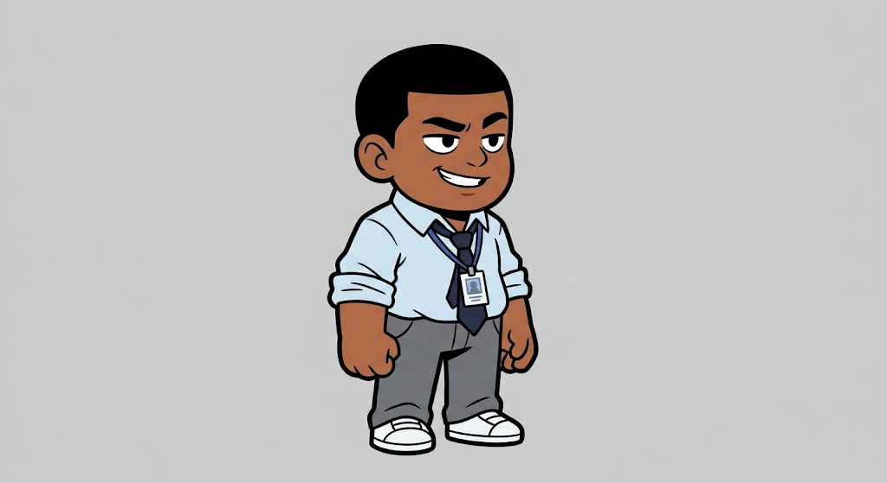
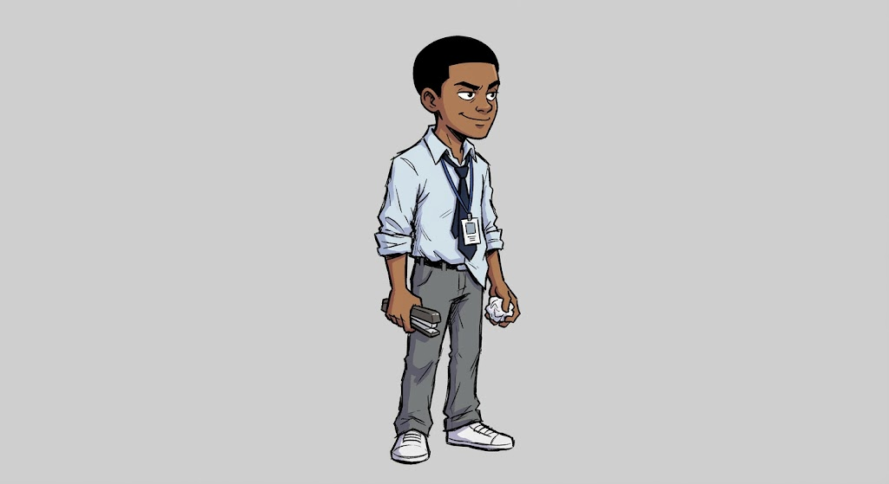
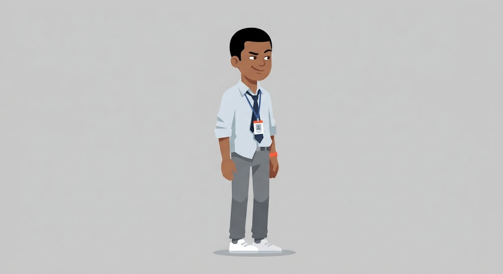
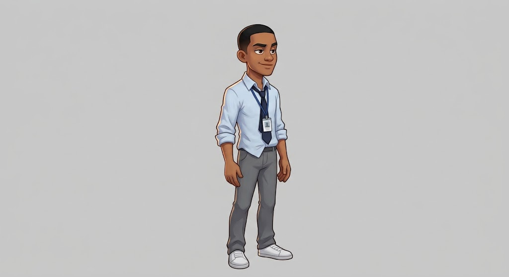
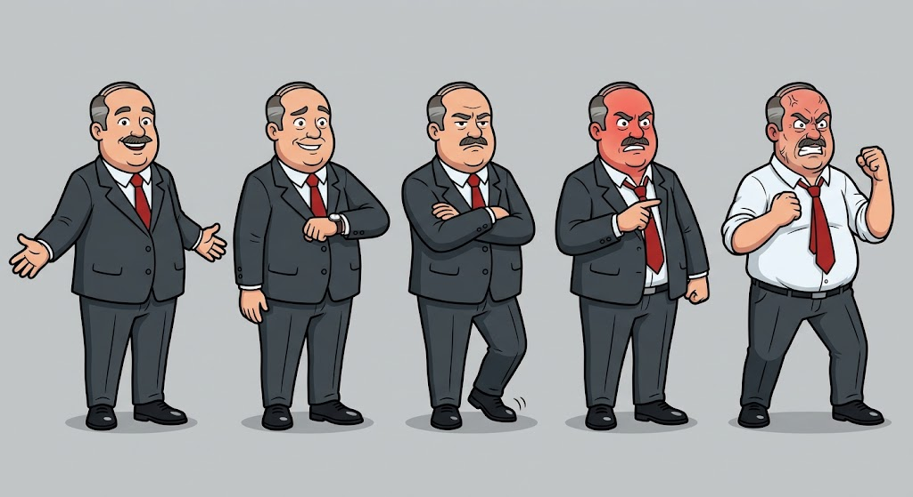
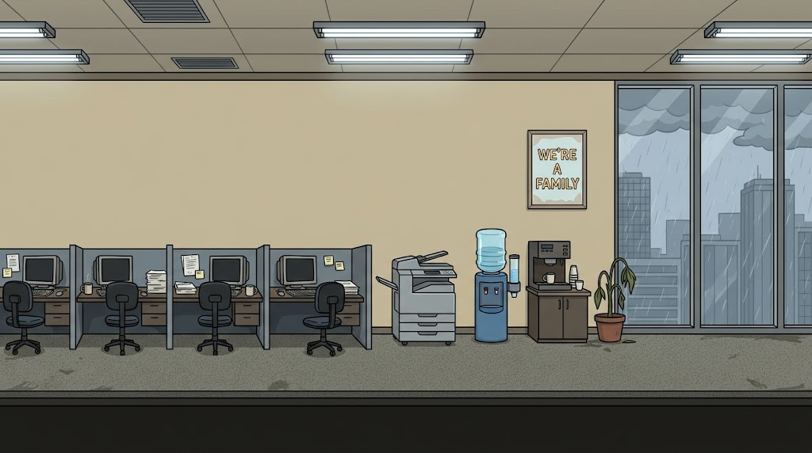
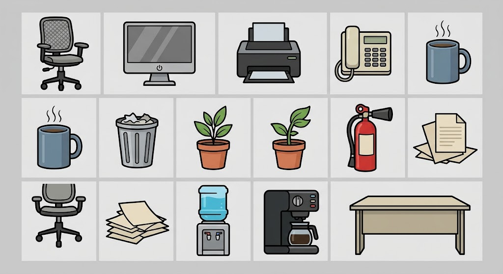

Every character prompt describes exactly the same person in the same words, so the only
thing that changes between A, B, C and D is the style itself. Pick one and it becomes the
reference image attached to every future generation — that attachment is what stops the
character drifting between poses.
THE PLAYER — FOUR DIRECTIONS

A — BOLD FLAT VECTOR
Thick outlines, flat fills, chunky proportions. Cheapest to animate and reads clearest at
phone size.SAFEST FOR ANIMATION

B — HAND-DRAWN INK COMIC
Scratchy expressive linework, cel shading. Funniest of the four and the most personality,
but hand-drawn line texture is the hardest thing to keep identical across
animation frames.BEST CHARACTER, HARDEST TO REPEAT

C — CLEAN FLAT ILLUSTRATION
No outlines, geometric shapes, muted palette. Elegant, but with no outline the character
risks disappearing into the office background — and it reads more like a corporate
website than a game.WEAKEST SILHOUETTE

D — POLISHED CARTOON
Soft shading, rim light, realistic proportions. The most premium looking. Also the most
detail to reproduce per frame, so the most expensive and the most prone to
drift.BEST LOOKING, MOST EXPENSIVE
THE BOSS — FIVE ANGER STAGES

FRIENDLY → CONCERNED → ANNOYED → ANGRY → ENRAGED
Generated as one sheet on purpose, which is what keeps him the same man in all five.
The jacket comes off for the boss fight.
THE OFFICE

FLAT SIDE-ON ELEVATION
Drawn as a platformer stage, not a perspective scene — that flatness is what lets the
camera pan along it. Rain outside, "WE'RE A FAMILY" on the wall.
PROPS

PHYSICS OBJECTS, INTACT STATE
Each one still needs a broken version. A few duplicates came back — harmless, we keep
the best of each.
WHAT HAPPENS NEXT
Pick a direction. Then pass 2 regenerates the winner on a flat green background, and that
image gets attached to every subsequent prompt as the reference — animation frames first,
then each clothing layer for the character creator, always the same body and the same pose
with only the garment changing. That alignment is the whole reason the paper-doll system works.
My pick: A, with B's face. The game lives or dies on animation, and A is the only one
of the four cheap enough to animate properly at this budget — but B has the mischief the
character needs, and that expression can be carried over.